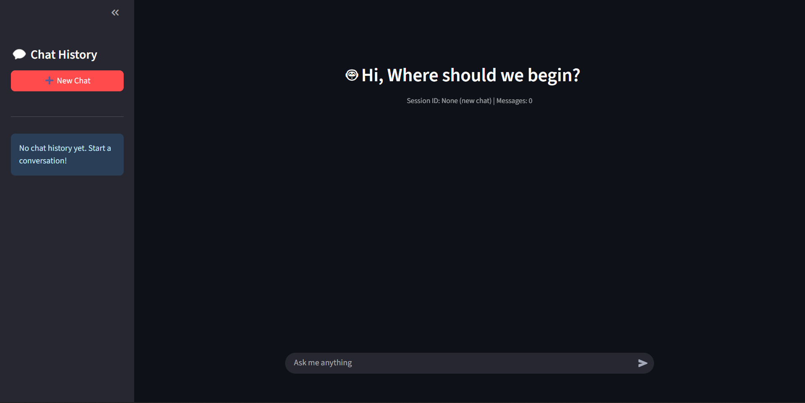

ISO 15189:2022 RAG Chatbot – Laboratory QMS Assistant
This project applies Retrieval-Augmented Generation (RAG) to the ISO 15189:2022 standard,
which defines the framework for quality management systems (QMS) in medical laboratories.
A strong QMS is critical for ensuring reliable test results, patient safety,
and international accreditation — but the standard can be dense and difficult to navigate.
This chatbot was designed to provide clause-specific guidance by retrieving relevant sections of the standard and generating clear, contextual explanations
This project was built using LangChain to handle document retrieval and context management deployed using Streamlit on an AWS EC2 instance.
Skills: LangChain, Vector Databases(Chroma), Docker, AWS

AnimeMatch
This is a content-based recommendation system I built as a fun project that combines my love for anime with data science.
The app analyzes anime metadata such as synopsis, genres, and themes to compute text embeddings using TF-IDF,
then applies cosine similarity to recommend similar shows.
I also integrated API updates Jikan so the dataset stays current,
and automated weekly refreshes with cloud cron jobs. The app is deployed on Render, with persistent storage for embeddings and trending anime data.
Skills: Data Pipelines, ML, Cloud Deployment, APIs

SQL and Tableau Project
Conducted an exploratory data analysis on global mortality data using Microsoft Excel, SQL for querying, aggregation, and trend analysis,
Power Query for data transformation (unpivoting/cleaning), and Tableau for visualization.
The project identified leading causes of death globally and in Nigeria, uncovered trends such as rising drug use disorder deaths,
and presented findings through an interactive Tableau dashboard, showcasing end-to-end data preparation, analysis, and visualization skills.
Skills: Data Cleaning, SQL Querying, Data Visualization (Tableau), Exploratory Data Analysis.

Nashville Housing Data Cleaning (SQL Project)
This project demonstrates end-to-end data cleaning using SQL on a real estate dataset.
Key steps included standardizing date formats, filling missing property addresses via self-joins,
splitting address fields into components, normalizing categorical values, removing duplicates with CTEs and window functions,
and dropping irrelevant columns. The project highlights practical data cleaning techniques essential for preparing raw data for analysis.
Skills: SQL, Data Cleaning, Data Transformation, Window Functions, CTEs